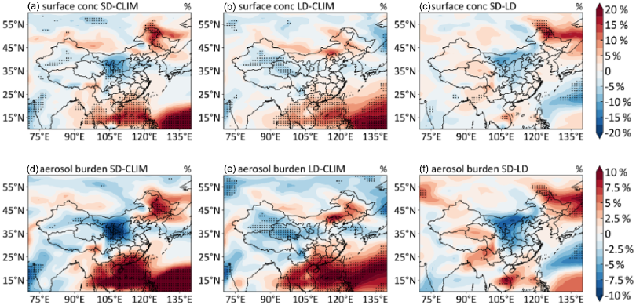
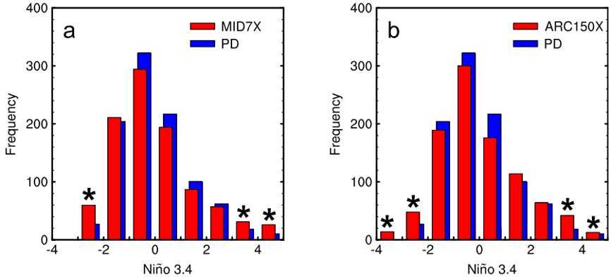

研究项目
科研项目
-
国家自然科学基金面上项目 - 我国大气气溶胶与ENSO事件的相互影响机制研究（41975159）, 2020.1-2023.12, 项目负责人
项目亮点成果
1）利用PM2.5浓度监测数据揭示了2014–2021年ENSO事件期间中国京津冀、汾渭平原、长三角和珠三角四个特大城市群冬季PM2.5浓度的变化。结果表明，京津冀、汾渭平原、长三角、珠三角地区的2014–2021年冬季平均PM2.5浓度分别为95，97，65和40 μg m−3。在京津冀和汾渭平原地区，El Niño年冬季PM2.5浓度比La Niña年高2–37 μg m−3，这是由El Niño（La Niña）事件期间的异常南风（北风）减弱了风速，使得PM2.5在京津冀和汾渭平原积累（扩散）导致的。在珠三角地区，El Niño年冬季PM2.5浓度比La Niña年低1–16 μg m−3，这是由于El Niño期间降水增加导致的。在长三角地区，风和降水异常的综合影响导致ENSO对PM2.5影响存在不确定性。此项研究有助于从实际观测的角度了解ENSO对中国主要城市群影响作用，相关研究成果已经发表于《Atmospheric and Oceanic Science Letters》（第一标注）。
图1 中国环境监测总站的中国地表PM2.5浓度监测数据的冬季平均值（a–d）分别在El Niño年和La Niña年期间分布以及（e–g）由El Niño年减去La Niña年的差值分布。具体包括（a）2015年（El Niño年）（b）2017年（La Niña年）（c）2018年（El Niño年）（d）2020年（La Niña年）的冬季平均地表PM2.5浓度分布，以及（e）2015年减去2017年（f）2018年减去2017年（g）2018年减去2020年的差值分布。单位：μg m−3。
2）利用地球系统模型E3SM定量研究了不同持续时间的El Niño对我国冬季细颗粒气溶胶（PM2.5）浓度和雾霾天数的影响。研究发现，在El Niño事件期间，中国东北和南部的PM2.5浓度增加了1–2 µg m−3，而中国中东部的PM2.5浓度相对于气候态平均值减少了2.4 µg m−3。与长持续时间（LD）的El Niño事件相比，短持续时间（SD）但强度更强的El Niño导致中国中东部地区出现偏北风异常，有利于该地区的气溶胶扩散。此外，异常的东南风削弱了中国东北地区冬季盛行的西北风，有利于来自南亚和东南亚的气溶胶输送，这导致了相比于长持续时间的El Niño事件，短持续时间的El Niño事件期间中国东北地区的气溶胶增加。此外，短持续时间的El Niño事件对中国冬季雾霾天的调节作用是长持续时间El Niño事件的2–3倍。El Niño事件中的气溶胶变化主要由大气环流变化引起的气溶胶异常积累/扩散和传输控制，而El Niño引起的降水变化对气溶胶的影响不大。近几十年来（尤其是1940年代以后），短持续时间的El Niño事件的发生频率明显增加，表明在过去几十年中，短持续时间的El Niño对中国的气溶胶污染产生了越来越强烈的调节作用。此项研究揭示了不同持续时间的El Niño事件对我国大气气溶胶变化的重要影响，对于理解El Niño对中国雾霾污染的影响、缓解空气污染、应对气候变化都具有重要意义，相关研究成果已经发表于《Atmospheric Chemistry and Physics》（第一标注）。

图2 E3SM模拟的不同持续时间的El Niño事件导致的冬季平均（a–c）近地表PM2.5浓度以及（d–f）气溶胶柱浓度的变化百分比。其中（a）和（d）表示短持续时间El Niño的影响，（b）和（e）表示长持续时间El Niño的影响，（c）和（f）表示短持续时间的El Niño相对于长持续时间El Niño的影响。黑色圆点表示在90%置信度的双尾T检验中具有统计学意义。
3）利用地球系统模型E3SM揭示了不同空间分布类型和不同持续时间的El Niño对中国沙尘气溶胶污染的影响及其潜在机制。结果表明，东太平洋（EP）和中太平洋（CP）El Niño都使中国中东部地区冬季的沙尘气溶胶浓度增加了5−50 μg m−3。由于更强的10m风速和更低的相对湿度有利于源区的沙尘排放，以及更强的西北风和更少的降水有利于沙尘传输，CP El Niño期间中国北部的沙尘浓度比EP El Niño期间高5−20 μg m−3。相对于气候态平均值，短持续时间（SD）El Niño导致中国北方冬季沙尘浓度增加20−100 μg m−3，而长持续时间（LD）El Niño则减少5−50 μg m−3，这也与El Niño引起的大气环流、降水和相对湿度变化有关。在次年春季，LD El Niño会显著增强中国北方的沙尘浓度，表明LD El Niño的强度较弱但持续时间较长，可以显著影响中国春季的沙尘。此项研究有助于理解不同类型的El Niño对中国气溶胶污染的影响，对空气污染控制和沙尘暴预测有深远意义，相关研究成果已经发表于《Atmospheric Chemistry and Physics》（第一标注）。
图3 E3SM模拟的不同持续时间和不同空间分布类型的El Niño事件导致的冬季平均近地面沙尘气溶胶浓度变化。包括（a）东太平洋型El Niño、（b）中太平洋型El Niño、（c）东太平洋型El Niño相对于中太平洋型的El Niño、（d）短持续时间El Niño、（e）长持续时间El Niño和（f）短持续时间El Niño相对于长持续时间El Niño导致的冬季平均近地面沙尘气溶胶浓度的综合差异。单位：µg m−3。黑色圆点表示在90%置信度的双尾T检验中具有统计学意义。
4）利用气溶胶-气候模式揭示了北极和北半球中纬度人为黑碳气溶胶对极端ENSO事件的影响。结果表明，北极和北半球中纬度的黑碳气溶胶吸收太阳辐射使北纬30°到60°度之间的大部分地区变暖。北半球黑碳的增温作用减弱了热带和高纬度地区之间的纬向温度梯度，进一步减少了热带地区在大气和海洋中向北的经向热量输送，进而导致能量在赤道地区辐合，赤道海温增加，通过温跃层反馈和纬向平流反馈，最终造成极端ENSO事件的增加。此项研究探索了黑碳气溶胶对ENSO事件的作用，对极端天气气候事件预测具有重要科学意义，相关研究成果已经发表于《Journal of Climate》（第一标注）。

图4 模式模拟的（a）中纬度和（b）北极黑碳气溶胶增加对Niño3.4指数频率分布的影响。（a）中的红色柱表示中纬度黑碳气溶胶增加时的Niño3.4指数频率分布，（b）中红色柱表示北极黑碳气溶胶增加时的Niño3.4指数频率分布，（a）和（b）中的蓝色柱表示当今排放情况的Niño3.4指数频率分布。Niño3.4指数的单位是K。黑色星号表示红色柱和蓝色柱之间有显著差异。
5）利用气溶胶-气候模式揭示了赤道海洋性大陆地区生物质燃烧黑碳气溶胶对ENSO变率的影响和潜在机制。结果表明，海洋性大陆生物质燃烧黑碳气溶胶排放增加会引起海洋性大陆上空整个对流层黑碳气溶胶浓度增加，在大气层顶造成正的直接辐射强迫，在地表造成负的直接辐射强迫。海洋性大陆增加的黑碳吸收太阳辐射加热大气，使得海洋性大陆上空大气被加热，产生异常上升气流，并在热带太平洋中西部地区上空产生补偿下沉气流。这导致在热带太平洋中部地区近地表出现异常西风气流，减弱了东风信风，抑制了热带太平洋由东向西的暖流输送，进而抑制了热带太平洋东部海表下方垂直方向上海洋深层向海表的寒流输送，导致热带太平洋东部地区异常增暖。与此同时，热带上空大气环流变化导致热带东太平洋上空低云减少，高云增加，有助于维持热带东太平洋的海表温度异常升高。热带东太平洋地区平均海表温度升高会导致ENSO变率增强，极端El Niño和La Niña事件的频率增加。此项研究研究强调了生物质燃烧黑碳气溶胶排放对ENSO变率的潜在作用，相关研究成果已经发表于《Journal of Climate》（第一标注）。
图5 CESM模拟的海洋性大陆生物质燃烧黑碳气溶胶增加对（a）海平面气压（hPa）、（b）10米风速（m s−1）、（c）近地表气温（℃）、（d）高云量（%）、（e）中云量（%）和（f）低云量（%）的影响。黑色圆点表示在95%置信度的双尾T检验中具有统计学意义。